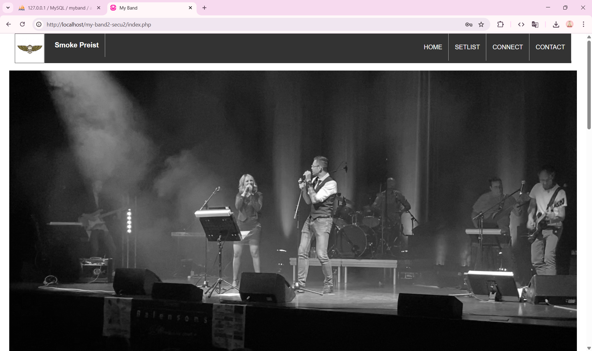
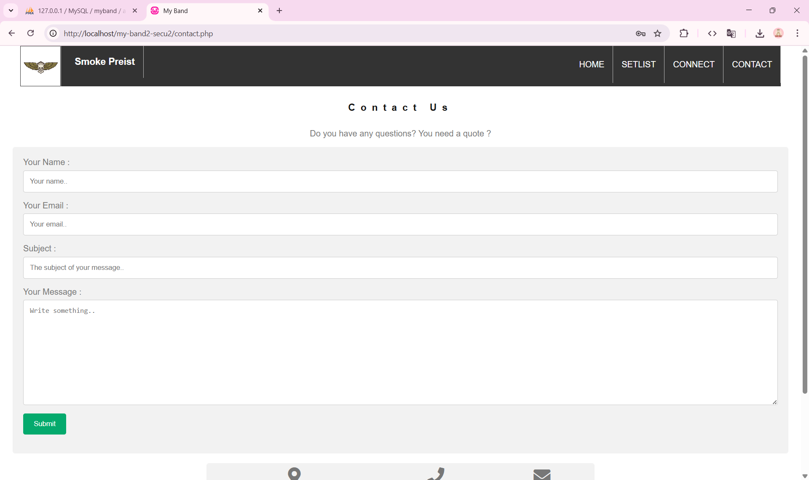

Aperçu du projet


Contexte & objectif
Le projet My Band est un site web dynamique construit en PHP, HTML, CSS, avec une base de données pour stocker les contenus (musiques, paroles, pages, etc.). L'idée était de rendre les pages modifiables, de lier les contenus via des scripts PHP, et de permettre une interaction entre l'interface front-end et la base de données.
Ce projet m'a permis de comprendre comment structurer un site web dynamique, de gérer les requêtes SQL depuis le serveur, et de construire des interfaces d'édition pour le contenu.
Technologies utilisées
Fonctionnalités clés
- Affichage dynamique des pages : pages de musique, paroles, actualités ou contenu lié.
- Interface d'édition / modification : possibilité de modifier le contenu (texte, titres, etc.).
- Gestion de la base de données : stockage des données de musique, pages, utilisateurs.
- Téléchargement / affichage : par exemple téléchargement de paroles ou fichiers audio.
- Navigation fluide : liens dynamiques et cohérents entre les pages.
Défis techniques rencontrés
- Connexion base de données : sécurisation des requêtes, gestion des erreurs de connexion.
- Injection SQL & sécurité : éviter les injections, valider / assainir les entrées utilisateur.
- Synchronisation front-end / back-end : que les modifications via PHP se reflètent correctement côté interface.
- Organisation des fichiers PHP : structurer les include (header, footer, dbconnect, etc.) pour éviter la duplication.
Compétences développées
Développement web dynamique
PHP, liaison avec base de données, page modifiable
SQL & structure de données
Requêtes, tables, relations, gestion de contenu
Architecture simple
Fichiers séparés (header, footer, connect, pages), modularité
Sécurité & validation
Échapper les entrées, éviter les erreurs et injections, gestion des erreurs
Conclusion & perspectives
Avec My Band, j'ai mis en pratique la création d'un site web **interactif et modifiable** par l'utilisateur. Ce projet m'a permis de faire le lien entre front-end et back-end, de manipuler une base de données, et de construire une interface d'édition.
À l'avenir, j'aurais pu ajouter une gestion d'utilisateurs/authentification, une interface plus moderne (Ajax / JS), ou la gestion des fichiers audio / streaming.